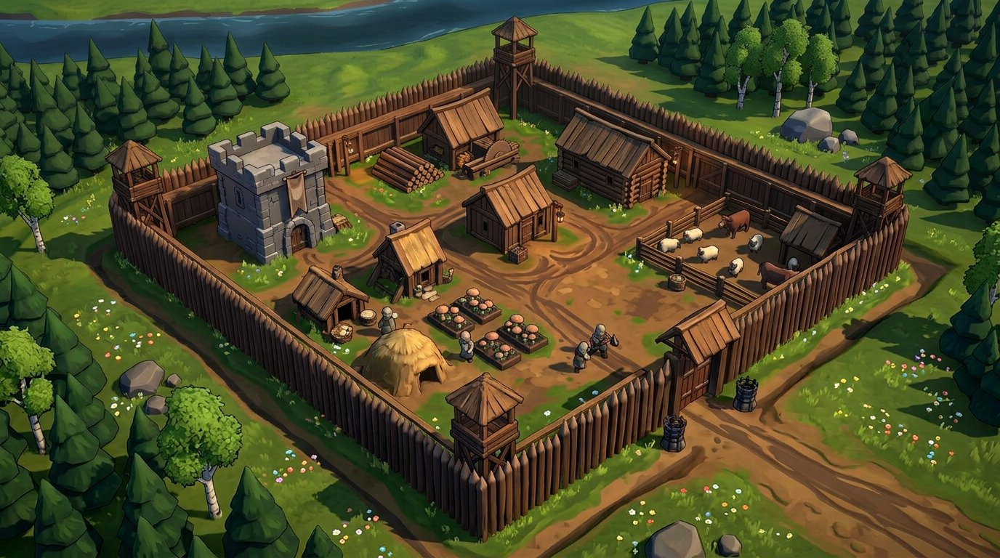
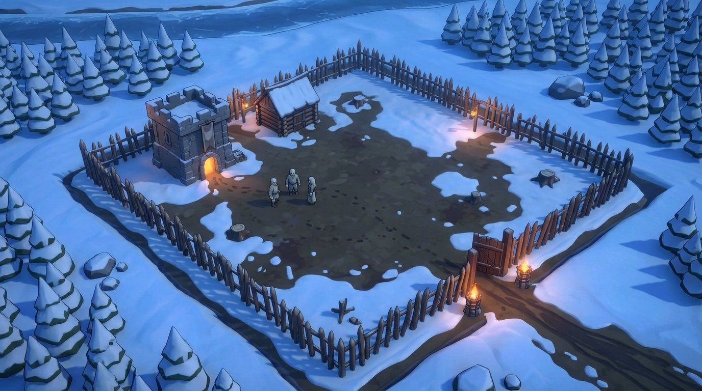
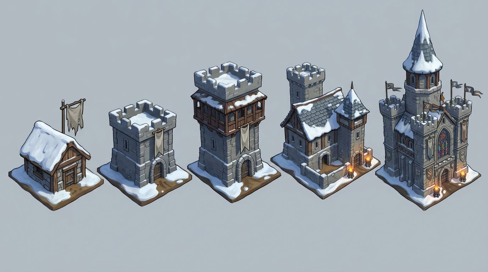
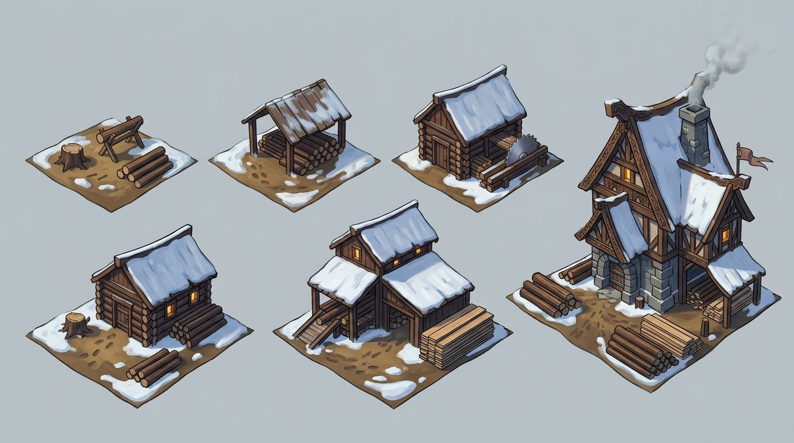

Раунд 6 · концепты к обсуждению: время суток, сезоны, первый день
Один и тот же двор. Плашки с меткой «нарисовано» — правки подложки генератором; с меткой «на лету» — дневная подложка + цветокоррекция CSS + слой светящихся окон. Никакой перерисовки.
2 · Зима, деньТа же сцена, поменяли только свет: солнце, факелы потушены, окна тёмные.
на лету · CSS-градация + эмиссия
3 · Зима, вечер — из плашки №2Сравнить с №1: тот же эффект без отдельного набора «вечерних» картинок.

нарисовано · правка сцены
4 · Лето, деньСнег снят, земля и трава, лес зелёный, река открыта. Постройки те же.
на лету · CSS-градация + эмиссия
5 · Лето, вечер — из плашки №4Тот же приём: одна дневная картинка на сезон, вечер считается в рантайме.

нарисовано · правка сцены
6 · Первый деньДвор + один сарай, низкий кривой тын, пустая земля. Отсюда игрок начинает.

Двор · 5 визуальных стадийХижина → башня → башня с галереей → двор с двумя башнями → большой замок со шпилем. Стадии привязываются к уровням (1–4, 5–9, 10–15, 16–20, 21–25).

Лесопилка · стадии (генератор дал шесть вместо пяти)Козлы и брёвна → навес → изба с пилой → мельница с пандусом → большая лесопильня с трубой. Для продакшена оставим пять.